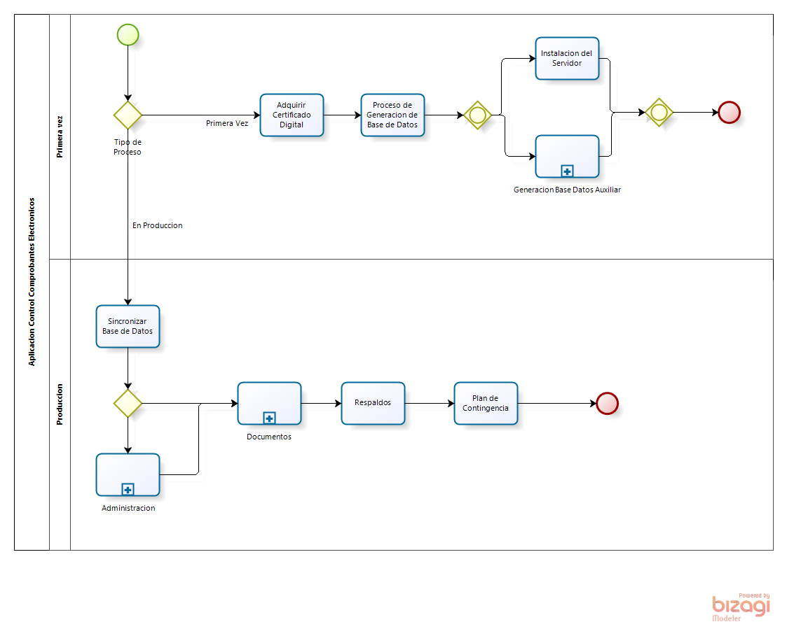
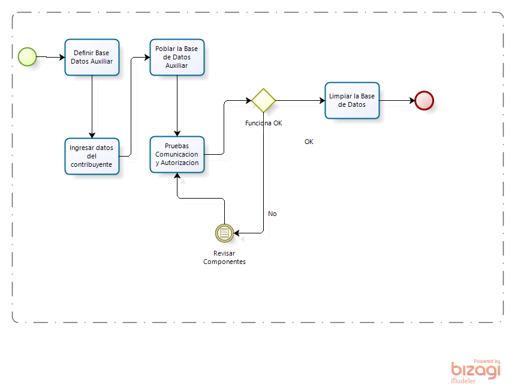

Documentacion: Comprobantes electronicos extension para QuickbooksVersion 1.0 (Preparado para SALGRAF)
Presentacion AURORA_E
El Servicio de Rentas Internas del Ecuador ha expedido las normas para la implementacion de la
firma electronica de los documentos emitidos por los sujetos pasivos.
Los documentos que deberan ser firmados digitalmene son: las facturas,
las notas de debito y credito, los comprobantes de retencion, y las guias de remision.
SALGRAF ha proporcionado la información inicial para desarrollar esta aplicación
para satisfacer los requerimientos empresariales de SALGRAF en relación con la
emisión de los comprobantes emitidos por la compañía bajo los estándares corporativos
de SALGRAF y su emisión electrónica bajo las reglas anunciadas por el SRI.
Objetivos
La aplicación administra todos los procesos para la emisión electronica de facturas,
notas de débito, notas de crédito, guías de remisión, y comprobantes de retención;
utilizando los servicios del Internet y adjuntando la certificación electrónica para
enviar a los clientes de SALGRAF por medio del correo electrónico.
Para el efecto la aplicación utilizara la sincronización de los datos desde la
aplicación Quickbooks con la base de datos generada por esta nueva aplicación.
Adquirir el Certificado Digital
Solicitar en https://www.eci.bce.ec la Entidad de Certificación de
Información del Banco Central del Ecuador, se debe enviar los documentos requeridos en formato electrónico de
toda la información requerida. El banco central notificará por medio de correo
electrónico o teléfono al subscritor que debe realizar el pago.
Una vez realizado el pago por cualquiera de los medios señalados en la página
web de la ECIBCE, el operador de registro notificara lugar, fecha y hora para
proceder a la identificación y emisión del certificado solicitado.
El solicitante/suscriptor deberá presentarse ante la Autoridad de Registro de la
ECIBCE con una cédula o pasaporte válido y suficientemente claro y
actualizado para permitir su inequívoca identificación.
Requerimientos del SRI
La solicitud de certificación para los ambientes de pruebas y producción deberá realizarla directamente a
través del Portal WEB del SRI (Servicios en Línea), recuerde que debe encontrarse en estado activo y al día
en sus obligaciones tributarias para evitar cualquier tipo de sanción posteriormente, esta solicitud se
realizará por una sola vez para cada ambiente
Quickbooks y Opensync
Permite la sincronizacion de las bases de datos en las dos direcciones.
Permite recuperar los reports generados en QUICKBOOKS
Se puede sincronizar con las bases de datos: MS Access, Microsoft SQLServer, MySQL, y
Oracle.
Operaciones de sincronizacion automatcas con bitacora de eventos y un navegador de datos
incluido. Es una herramienta con mejores alternativas que QODBC.
Secuencia de Procesos
- Proceso por primera vez
- Generar al menos dos copias del certificado digital
- Instalar el servidor web
- Instalar Opensync
- Definir proceso de generacion de la base de datos sincronizada
- Generar los indices y relaciones de las tablas
- Ambiente de Pruebas
- Ambiente de Produccion
- Procesos utilitarios
Carrillos Team
Opciones de Administracion
- Definir los niveles de seguridad
- Ingreso de usuarios
- Cambio de claves y eliminacion de usuarios
- Mantenimiento de Puntos de Emision
- Generacion de Claves
- Lista de Claves
- Recuperar estado de claves
S.R.I.
Procesos en Produccion
- Seleccionar los comprobanes desde Quickbooks
- Seleccionar los comprobantes para firmar
- Enviar los comprobanes firmados
- Recibir la respuesta
- Revisar autorizados y rechazados
- Enviar comprobantes autorizados a los clientes
Carrillos Team
Procesos Utilitarios
- Lista de Contribuyentes
- Ingreso de Usuarios
- Recuperacion de Claves
- Chequear la Base de Datos
- Lista de Claves Usadas
- Backup de la Base de Datos
S.R.I.
Diagrama General de la Aplicacion

Esta aplicación es autónoma del Quickbooks, y se puede ejecutar sin necesidad de que esté disponible Quickbooks.
La aplicación controlara todos los documentos que han sido emitidos, requeridos para la firma, firmados,
autorizados, rechazados, pendientes y pueden ser consultados utilizando la base de datos generada por la
aplicacion y que residen en un servidor de Internet.
Firma electrónica: Son los datos en forma electrónica consignados en un mensaje de datos,
adjuntados o lógicamente asociados al mismo, y que puedan ser utilizados para identificar
al titular de la firma en relación con el mensaje de datos, e indicar que el titular de la
firma aprueba y reconoce la información contenida en el mensaje de datos.
La Entidad de Certificación de información y servicios relacionados (ECIBCE): Es el Banco
Central del Ecuador que emite certificados de firma electrónica y que puede prestar otros
servicios relacionados con la firma electrónica, autorizada por el Consejo Nacional de
Telecomunicaciones, según lo dispuesto en Ley de Comercio Electrónico, Firmas Electrónicas
y Mensajes de Datos y su Reglamento.
Certificados de Firma Electrónica de todo propósito: Son certificados de firma electrónica
que servirán para firmar electrónicamente: correos, facturas, contratos, etc. donde
se pueda reemplazar la firma manuscrita y se encuentre facultado para hacerlo dentro del
ámbito de su actividad o límites de su uso. Este certificado, puede ser utilizado por
personas naturales, personas pertenecientes a empresas y funcionarios o servidores públicos.
Existen varias opciones de certificado digital, pero esta aplicación utiliza un ARCHIVO
(Es un certificado estándar x.509 en formato p12, que puede ser integrado en cualquier
sistema operativo) - vigencia 1 año.
Generacion y Mantenimiento de la Base de Datos

OpenSync es una herramienta que ha sido desarrollada para sincronizar la base de datos
de QuickBooks con MySQL, SQL Server, Access, u Oracle.
Existen dos versiones de Opensync la configuracion basica utiliza Access, y la otra version administra
las otras bases de datos. La principal ventaja que significa poseer una base de datos paralela
y sincronizada con la base de datos de Quickbooks es, los datos pueden ser de tener una base de datos del mercado permitirá a SALGRAF integrar la base de datos sincronizada desde QuickBooks con cualquier desarrollo y este podría ser: la integración con el website corporativo, generación de reportes, y/o desarrollo de otras aplicaciones.
Notificaciones
Avisos! Esta aplicacion esta protegida por los derechos de autor
Carrillos Team
Desde la Redaccion
Analisis de Requerimientos
3 horas/dia
Investigacion Alternativas
15 dias
Formular el Modelo
15 dias
Desarrollo del Modelo
180 dias
Quickbooks
Es la aplicacion financiera para empresas de bajo presupuesto mas vendida en los EEUU
Preparacion de Datos
El cliente antes de iniciar la implementacion de esta aplicacion adquirira una licencia premium de
Opensync que adquirira en
Synergration adicionalmente
debera realizar todo el proceso para obtener una licencia valida para certificacion digital.
Carrilos Team sugiere utilizar como servidor de los servicios de internet
la ultima version de
Apache y la base de datos
Mysql
Servidor de web Apache tiene las siguientes ventajas.
MySQL es una base de datos con varias opciones de instalacion
la version de negocios .
Descripcion de Procesos
| Nombre |
Descripcion |
Requerimiento |
Resultado |
| Seleccion de Comprobantes |
Se leen todos los comprobantes seleccionados desde las tablas que contienen los
datos originales de QUICKBOOKS, y se registran en las tablas cuyo formato corresponde
al requerido por el SRI |
Ingresar la fecha inicial y final |
Mensaje con el numero de comprobantes ingresados |
| Firmar Comprobantes |
Description |
Ingresar la fecha inicial y final |
Archivos en XML generados |
| Enviar Comprobantes |
Los archivos XML son enviados al SRI utilizando los servicios de internet del SRI |
Tener los nombres de los archivos XML generados |
Archivo con autorizacion o con los mensajes de error |
| Enviar Autorizados |
Se envian los comprobantes autorizados a los clientes |
Cada cliente debera tener una direccion de correo electronico valida |
Notificacion del cliente |